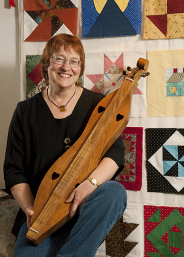
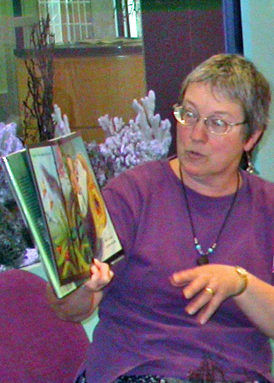

Stories Afoot!
Footloose stories and music with Barb Childers
 Photograph by Mark Alexander
When Barb Childers appears in an Appalachian storytelling musical duo called Bear Foot, she is the Foot and her husband Russ is the Bear. When she cuts loose on her own, she calls her footloose stories and musical performances “Stories Afoot!” Barb is a former children’s librarian, a past dancer with the traditional clogdance team Dancin’ Fools, one-half of Bear Foot, and one-fifth of the popular old-timey group Rabbit Hash String Band. She specializes in highly interactive Appalachian storytelling and folklore but loves to share historical, seasonal, and cultural traditions of other regions as well. Her captivated audiences range in age from children to senior citizens. Barb and her husband, veteran performers of over 30 years, make their home in Batavia, Ohio.
Contact Barb Childers by email BarbChilders@fuse.net or call (513) 732-2015. 1555 Old State Route 74, Batavia, Ohio 45103
Sampling of Stories
- Dr. Thompson’s Umbrella - a family story from Zimbabwe
- Three-Legged Chickens - a whopper
- Lion on the Path - a traditional skit from Zimbabwe
- Muley Eggs - a traditional Appalachian tale
- Sody Saleratus - a traditional Appalachian tale
Sampling of Audience Interactions
- How Smart Is Your Right Foot? - a challenge
- Patting Juba - African American tradition
- World string stories - Native American, African, Asian, European, Oceanic, etc.
- Traditional crafts - cornhusk guys and gals, pine cone bird feeders, etc.
- Recycled Rhythms - music made from re-used materials
Sampling of Traditional Songs
- C-H-I-C-K-E-N - banjo uke and sign language and dancing chicken
- How Many Biscuits Can You Eat? - an Appalachian song
- Wind and Rain - a traditional ballad of two sisters
- Ain’t Gonna Rain No More - a WWII memory
- Hush Little Baby - an Appalachian lullabye with lap dulcimer
 Photograph by Rick Helmes